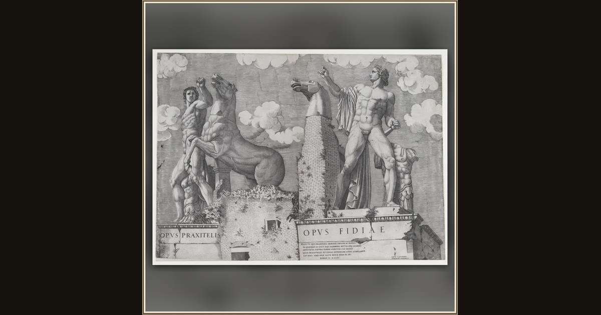

Statues of the Dioscuri at the Quirinal, Rome, from "Speculum Romanae Magnificentiae"
Anonymous, Italian, 16th century · 1546 · met
An engraving from the Speculum Romanae Magnificentiae shows statues of the Dioscuri on the Quirinal in Rome, each youth beside a rearing horse: Castor tames horses in the hymn (3). Explore its place in Homer's The Homeric Hymns, Hymn 33 · To the Dioscuri, line